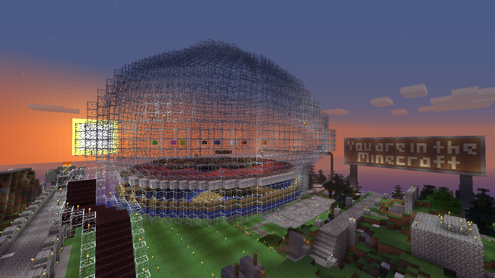
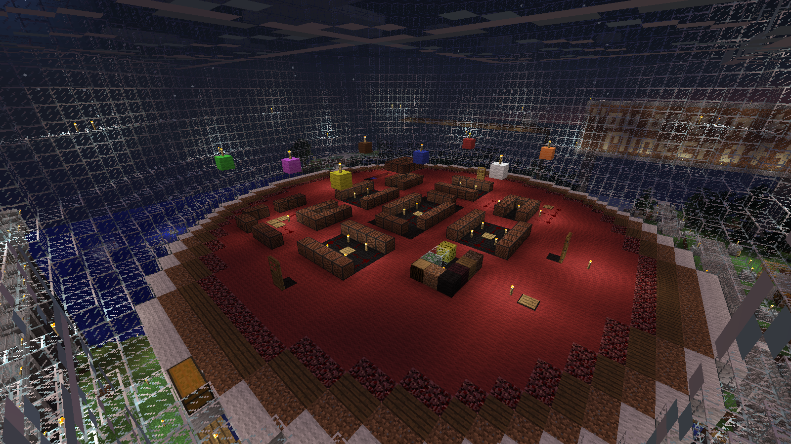
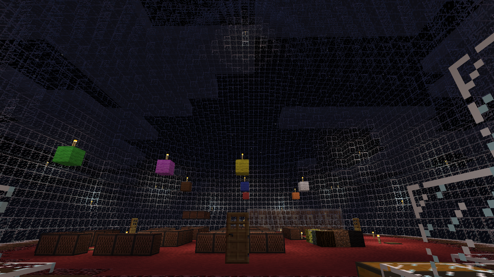
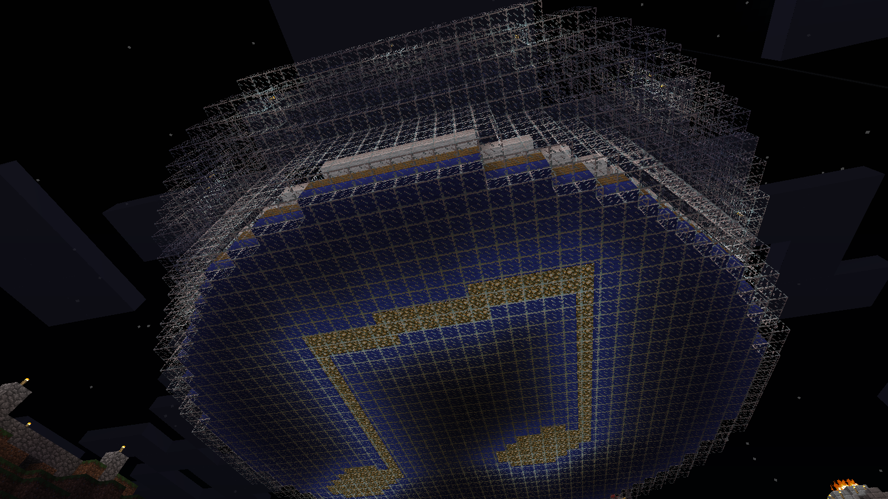

Enderman Arena of Music is a venue for sonic expression and performance that is open to all the residents of Orwell. It is create as a part of my residency in Orwell and it is the result of my expriments and discoveries about sound in Minecraft.
Enderman Arena of Music combines concrete sounds (any block or action makes a sound) as well as tonal sounds (Note Blocks) to create a set of instruments for performance, expression, narrative, creation and experimentation. It is a public place that is open to change and evolution that makes Minecraft a dynamic and unique reality.
Conforming to the acoustic laws of Minecraft, the space is designed as sphere hence it is called an arena. The space is laid out to accomodate the audience to hear all the instruments. At first, Minecraft introduces multiple limitations; however should be seen as beacons that challange the existing approaches and suggest new ways of thinking and values of aesthetics.
Here is the opening performance of the Enderman Arena of Music:
Enderman Arena of Music from Yagiz Mungan on Vimeo.
Here are some images of the space:

Enderman Arena of Music from outside

Instruments in Enderman Arena of Music

Performer's perspective Enderman Arena of Music

Enderman Arena of Music from beneath
|